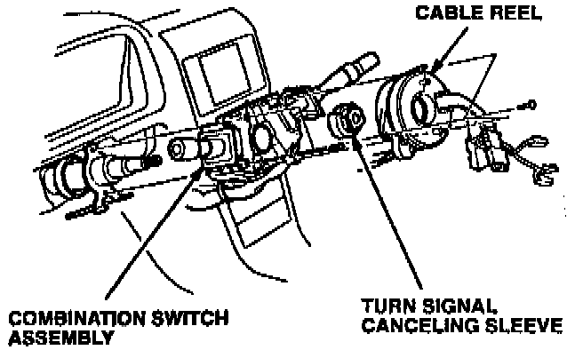
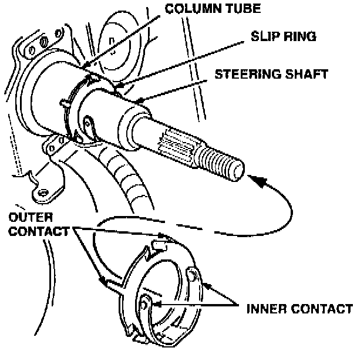

Audio - Remote Control Operation Erratic
December 20, 1994YEAR
1991-95 [NEW]
MODEL
LEGEND
VIN APPLICATION
ALL [NEW]
BULLETIN NO.
91-045
Erratic Remote Audio Control Operation
(Supersedes 91-045, dated September 29, 1992)
SYMPTOM
The radio may change stations if one of the remote volume controls on the steering wheel is pressed while turning the steering wheel. This may occur more often on cars equipped with an Acura cellular telephone.
PROBABLE CAUSE
Variation in grounding of the steering shaft as it rotates.
CORRECTIVE ACTION
Install the slip ring assembly listed under PARTS INFORMATION to improve grounding of the steering shaft. Refer to section 17 of the appropriate service manual.
1. Obtain the customer's audio system anti-theft code. Record the frequencies stored in the preset buttons.
2. Position the front wheels and steering wheel in the straight ahead position.
3. Disconnect the battery negative cable.
4. Remove the airbag and steering wheel as instructed in section 17 of the appropriate service manual. Be sure to follow all precautions for removal and handling of the airbag.
5. Remove the upper and lower column covers.
'91 - 93: Retract the steering column to its lowest position. [NEW]
'94 - 95: Reconnect the tilt/telescope switch assembly in the lower steering column cover. Retract the steering column to its lowest position. [NEW]
Steering Column:

6. Remove three mounting screws, then remove the cable reel. Let the cable reel hang from the wire harness.
7. Remove the turn signal canceling sleeve.
8. Remove two mounting screws, then remove the combination switch assembly. For easier removal, angle it toward the passenger's side. Lay the assembly on the floor of the car, do not disconnect it from the wire harness.
Column Tube Assembly:

9. Install the steering shaft slip ring as shown. The straight-cut edge of the slip ring should be on the bottom. Make sure the outer contacts tit tightly against the column tube and the inner contacts fit tightly against the steering shaft.
10. Install the combination switch assembly. Guide it in place carefully so you do not disturb the slip ring.
11. Install the canceling sleeve.
12. Install the cable reel assembly. Make sure the canceling sleeve and cable reel are engaged properly.
13. Install the upper and lower column covers.
14. Center the cable reel and install the steering wheel. Install the airbag.
15. Reconnect the battery negative cable. Enter the anti-theft code and set the preset buttons to the frequencies you recorded. Set the clock.
PARTS INFORMATION
Slip ring assembly: P/N 35257-SP0-315
WARRANTY CLAIM INFORMATION
In warranty: The normal warranty applies.
Out of warranty: Any repair performed after warranty expiration may be eligible for goodwill consideration by the District Technical Manager or your Zone Office. You must request consideration, and get a decision, before starting work.
Operation number: 510112
Flat rate time: 0.8 hour
Failed P/N: 35257-SP0-305
Defect code: 064
Contention code: B99